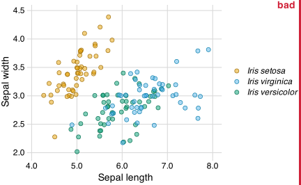
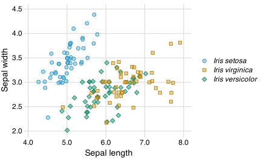
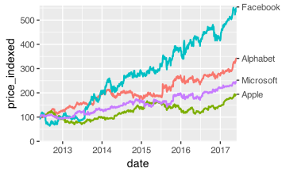

Redundant coding, text annotations
Claus O. Wilke
2025-05-31
Color encoding alone is not always sufficient
Iris virginica and Iris versicolor are difficult to tell apart

CVD simulation of preceding figure
Using both colors and shapes helps

Notice also that color assignment has been switched
CVD simulation of preceding figure
Pay attention to legend order

Legend order does not match visual order of the lines
Pay attention to legend order

Legend order does match visual order of the lines

CVD simulation of preceding figure
Even better: Don’t use a legend at all

This technique is called “direct labeling”
Direct labeling the Iris scatter plot

The ellipses help guide the eye
Label only a subset if there are too many items to label

Direct labeling in R
1. Secondary axis trick
Data preparation:
tech_stocks <- read_csv("https://wilkelab.org/DSC385/datasets/tech_stocks.csv") |>
mutate(date = ymd(date)) |>
select(company, date, price_indexed)
tech_stocks# A tibble: 9,569 × 3
company date price_indexed
<chr> <date> <dbl>
1 Alphabet 2017-06-02 342.
2 Alphabet 2017-06-01 339.
3 Alphabet 2017-05-31 338.
4 Alphabet 2017-05-30 342.
5 Alphabet 2017-05-26 341.
6 Alphabet 2017-05-25 340.
7 Alphabet 2017-05-24 335.
8 Alphabet 2017-05-23 333.
9 Alphabet 2017-05-22 330.
10 Alphabet 2017-05-19 327.
# ℹ 9,559 more rows1. Secondary axis trick
Extract most recent values:
1. Secondary axis trick
Side remark: The default legend order doesn’t match the data
1. Secondary axis trick
ggplot(tech_stocks) +
aes(x = date, y = price_indexed) +
geom_line(aes(color = company), na.rm = TRUE) +
scale_x_date(
limits = c(
ymd("2012-06-01"),
ymd("2017-05-31")
),
expand = c(0, 0)
) +
scale_y_continuous(
limits = c(0, 560),
expand = c(0, 0),
sec.axis = dup_axis(
breaks = tech_stocks_last$price_indexed,
labels = tech_stocks_last$company,
name = NULL
)
) +
guides(color = "none")
2. Manual labeling with geom_text()
The raw input data:
Sepal.Length Sepal.Width Petal.Length Petal.Width Species
1 5.1 3.5 1.4 0.2 setosa
2 4.9 3.0 1.4 0.2 setosa
3 4.7 3.2 1.3 0.2 setosa
4 4.6 3.1 1.5 0.2 setosa
5 5.0 3.6 1.4 0.2 setosa
6 5.4 3.9 1.7 0.4 setosa
7 4.6 3.4 1.4 0.3 setosa
8 5.0 3.4 1.5 0.2 setosa
9 4.4 2.9 1.4 0.2 setosa
10 4.9 3.1 1.5 0.1 setosa
11 5.4 3.7 1.5 0.2 setosa
12 4.8 3.4 1.6 0.2 setosa
13 4.8 3.0 1.4 0.1 setosa
14 4.3 3.0 1.1 0.1 setosa
15 5.8 4.0 1.2 0.2 setosa
16 5.7 4.4 1.5 0.4 setosa
17 5.4 3.9 1.3 0.4 setosa
18 5.1 3.5 1.4 0.3 setosa
19 5.7 3.8 1.7 0.3 setosa
20 5.1 3.8 1.5 0.3 setosa
21 5.4 3.4 1.7 0.2 setosa
22 5.1 3.7 1.5 0.4 setosa
23 4.6 3.6 1.0 0.2 setosa
24 5.1 3.3 1.7 0.5 setosa
25 4.8 3.4 1.9 0.2 setosa
26 5.0 3.0 1.6 0.2 setosa
27 5.0 3.4 1.6 0.4 setosa
28 5.2 3.5 1.5 0.2 setosa
29 5.2 3.4 1.4 0.2 setosa
30 4.7 3.2 1.6 0.2 setosa
31 4.8 3.1 1.6 0.2 setosa
32 5.4 3.4 1.5 0.4 setosa
33 5.2 4.1 1.5 0.1 setosa
34 5.5 4.2 1.4 0.2 setosa
35 4.9 3.1 1.5 0.2 setosa
36 5.0 3.2 1.2 0.2 setosa
37 5.5 3.5 1.3 0.2 setosa
38 4.9 3.6 1.4 0.1 setosa
39 4.4 3.0 1.3 0.2 setosa
40 5.1 3.4 1.5 0.2 setosa
41 5.0 3.5 1.3 0.3 setosa
42 4.5 2.3 1.3 0.3 setosa
43 4.4 3.2 1.3 0.2 setosa
44 5.0 3.5 1.6 0.6 setosa
45 5.1 3.8 1.9 0.4 setosa
46 4.8 3.0 1.4 0.3 setosa
47 5.1 3.8 1.6 0.2 setosa
48 4.6 3.2 1.4 0.2 setosa
49 5.3 3.7 1.5 0.2 setosa
50 5.0 3.3 1.4 0.2 setosa
51 7.0 3.2 4.7 1.4 versicolor
52 6.4 3.2 4.5 1.5 versicolor
53 6.9 3.1 4.9 1.5 versicolor
54 5.5 2.3 4.0 1.3 versicolor
55 6.5 2.8 4.6 1.5 versicolor
56 5.7 2.8 4.5 1.3 versicolor
57 6.3 3.3 4.7 1.6 versicolor
58 4.9 2.4 3.3 1.0 versicolor
59 6.6 2.9 4.6 1.3 versicolor
60 5.2 2.7 3.9 1.4 versicolor
61 5.0 2.0 3.5 1.0 versicolor
62 5.9 3.0 4.2 1.5 versicolor
63 6.0 2.2 4.0 1.0 versicolor
64 6.1 2.9 4.7 1.4 versicolor
65 5.6 2.9 3.6 1.3 versicolor
66 6.7 3.1 4.4 1.4 versicolor
67 5.6 3.0 4.5 1.5 versicolor
68 5.8 2.7 4.1 1.0 versicolor
69 6.2 2.2 4.5 1.5 versicolor
70 5.6 2.5 3.9 1.1 versicolor
71 5.9 3.2 4.8 1.8 versicolor
72 6.1 2.8 4.0 1.3 versicolor
73 6.3 2.5 4.9 1.5 versicolor
74 6.1 2.8 4.7 1.2 versicolor
75 6.4 2.9 4.3 1.3 versicolor
76 6.6 3.0 4.4 1.4 versicolor
77 6.8 2.8 4.8 1.4 versicolor
78 6.7 3.0 5.0 1.7 versicolor
79 6.0 2.9 4.5 1.5 versicolor
80 5.7 2.6 3.5 1.0 versicolor
81 5.5 2.4 3.8 1.1 versicolor
82 5.5 2.4 3.7 1.0 versicolor
83 5.8 2.7 3.9 1.2 versicolor
84 6.0 2.7 5.1 1.6 versicolor
85 5.4 3.0 4.5 1.5 versicolor
86 6.0 3.4 4.5 1.6 versicolor
87 6.7 3.1 4.7 1.5 versicolor
88 6.3 2.3 4.4 1.3 versicolor
89 5.6 3.0 4.1 1.3 versicolor
90 5.5 2.5 4.0 1.3 versicolor
91 5.5 2.6 4.4 1.2 versicolor
92 6.1 3.0 4.6 1.4 versicolor
93 5.8 2.6 4.0 1.2 versicolor
94 5.0 2.3 3.3 1.0 versicolor
95 5.6 2.7 4.2 1.3 versicolor
96 5.7 3.0 4.2 1.2 versicolor
97 5.7 2.9 4.2 1.3 versicolor
98 6.2 2.9 4.3 1.3 versicolor
99 5.1 2.5 3.0 1.1 versicolor
100 5.7 2.8 4.1 1.3 versicolor
101 6.3 3.3 6.0 2.5 virginica
102 5.8 2.7 5.1 1.9 virginica
103 7.1 3.0 5.9 2.1 virginica
104 6.3 2.9 5.6 1.8 virginica
105 6.5 3.0 5.8 2.2 virginica
106 7.6 3.0 6.6 2.1 virginica
107 4.9 2.5 4.5 1.7 virginica
108 7.3 2.9 6.3 1.8 virginica
109 6.7 2.5 5.8 1.8 virginica
110 7.2 3.6 6.1 2.5 virginica
111 6.5 3.2 5.1 2.0 virginica
112 6.4 2.7 5.3 1.9 virginica
113 6.8 3.0 5.5 2.1 virginica
114 5.7 2.5 5.0 2.0 virginica
115 5.8 2.8 5.1 2.4 virginica
116 6.4 3.2 5.3 2.3 virginica
117 6.5 3.0 5.5 1.8 virginica
118 7.7 3.8 6.7 2.2 virginica
119 7.7 2.6 6.9 2.3 virginica
120 6.0 2.2 5.0 1.5 virginica
121 6.9 3.2 5.7 2.3 virginica
122 5.6 2.8 4.9 2.0 virginica
123 7.7 2.8 6.7 2.0 virginica
124 6.3 2.7 4.9 1.8 virginica
125 6.7 3.3 5.7 2.1 virginica
126 7.2 3.2 6.0 1.8 virginica
127 6.2 2.8 4.8 1.8 virginica
128 6.1 3.0 4.9 1.8 virginica
129 6.4 2.8 5.6 2.1 virginica
130 7.2 3.0 5.8 1.6 virginica
131 7.4 2.8 6.1 1.9 virginica
132 7.9 3.8 6.4 2.0 virginica
133 6.4 2.8 5.6 2.2 virginica
134 6.3 2.8 5.1 1.5 virginica
135 6.1 2.6 5.6 1.4 virginica
136 7.7 3.0 6.1 2.3 virginica
137 6.3 3.4 5.6 2.4 virginica
138 6.4 3.1 5.5 1.8 virginica
139 6.0 3.0 4.8 1.8 virginica
140 6.9 3.1 5.4 2.1 virginica
141 6.7 3.1 5.6 2.4 virginica
142 6.9 3.1 5.1 2.3 virginica
143 5.8 2.7 5.1 1.9 virginica
144 6.8 3.2 5.9 2.3 virginica
145 6.7 3.3 5.7 2.5 virginica
146 6.7 3.0 5.2 2.3 virginica
147 6.3 2.5 5.0 1.9 virginica
148 6.5 3.0 5.2 2.0 virginica
149 6.2 3.4 5.4 2.3 virginica
150 5.9 3.0 5.1 1.8 virginica2. Manual labeling with geom_text()
Manually create table with label positions:
iris_labels <- tibble(
Species = c("setosa", "virginica", "versicolor"),
Sepal.Width = c(4.2, 3.76, 2.08),
Sepal.Length = c(5.7, 7, 5.1),
label = c("Iris setosa", "Iris virginica", "Iris versicolor"),
hjust = c(0, 0.5, 0),
vjust = c(0, 0.5, 1)
)
iris_labels# A tibble: 3 × 6
Species Sepal.Width Sepal.Length label hjust vjust
<chr> <dbl> <dbl> <chr> <dbl> <dbl>
1 setosa 4.2 5.7 Iris setosa 0 0
2 virginica 3.76 7 Iris virginica 0.5 0.5
3 versicolor 2.08 5.1 Iris versicolor 0 1 2. Manual labeling with geom_text()

2. Manual labeling with geom_text()
2. Manual labeling with geom_text()

3. Automatic labeling with geom_text_repel()
Prepare data:
car weight mpg
1 Mazda RX4 2.620 21.0
2 Mazda RX4 Wag 2.875 21.0
3 Datsun 710 2.320 22.8
4 Hornet 4 Drive 3.215 21.4
5 Hornet Sportabout 3.440 18.7
6 Valiant 3.460 18.1
7 Duster 360 3.570 14.3
8 Merc 240D 3.190 24.4
9 Merc 230 3.150 22.8
10 Merc 280 3.440 19.2
11 Merc 280C 3.440 17.8
12 Merc 450SE 4.070 16.4
13 Merc 450SL 3.730 17.3
14 Merc 450SLC 3.780 15.2
15 Cadillac Fleetwood 5.250 10.4
16 Lincoln Continental 5.424 10.4
17 Chrysler Imperial 5.345 14.7
18 Fiat 128 2.200 32.4
19 Honda Civic 1.615 30.4
20 Toyota Corolla 1.835 33.9
21 Toyota Corona 2.465 21.5
22 Dodge Challenger 3.520 15.5
23 AMC Javelin 3.435 15.2
24 Camaro Z28 3.840 13.3
25 Pontiac Firebird 3.845 19.2
26 Fiat X1-9 1.935 27.3
27 Porsche 914-2 2.140 26.0
28 Lotus Europa 1.513 30.4
29 Ford Pantera L 3.170 15.8
30 Ferrari Dino 2.770 19.7
31 Maserati Bora 3.570 15.0
32 Volvo 142E 2.780 21.43. Automatic labeling with geom_text_repel()

3. Automatic labeling with geom_text_repel()

3. Automatic labeling with geom_text_repel()
3. Automatic labeling with geom_text_repel()

3. Automatic labeling with geom_text_repel()

3. Automatic labeling with geom_text_repel()
3. Automatic labeling with geom_text_repel()
box.padding controls how far labels are placed from data points
Further reading
- Fundamentals of Data Visualization: Chapter 20: Redundant coding
- ggplot2 reference documentation:
geom_text() - ggrepel documentation: Examples
- ggrepel reference documentation:
geom_text_repel()